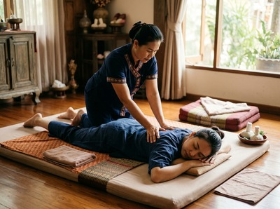
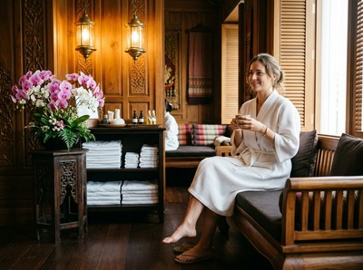

Glasgow Central Station sits at the heart of the city, a Category A listed landmark on Gordon Street that has served commuters, travellers, and city workers since 1879.
The area around the station is one of the busiest in Glasgow, drawing office workers from the financial district, visitors arriving from across Scotland and beyond, and professionals who move through this part of the city every working day. If you are looking for thai massage near Glasgow Central Station, Serendipity Massage Therapy & Wellness is one of the closest options you will find.
Serendipity is located at Central Chambers on Hope Street, G2, just a short walk from the station's main Gordon Street entrance. The walk takes around ten minutes along Hope Street heading north, passing through the heart of Glasgow's professional district. For anyone arriving by train and looking to decompress after a long journey, or for commuters who pass through the station daily and want to build a regular treatment into their week, the proximity makes it genuinely practical rather than just convenient in theory.

The area around Glasgow Central draws a wide cross-section of people. Legal and financial firms are concentrated along St Vincent Street and Blythswood Square, both within easy reach of the station. Hotel guests staying in the cluster of city centre hotels nearby make up another regular group. And for those travelling in from Ayrshire, Inverclyde, or the south of Glasgow on ScotRail services, the station is often the arrival point before a short walk to an appointment at Serendipity. Whether you have thirty minutes before your return train or you are making an afternoon of it, the location works.
Serendipity offers a full range of massage treatments, available to book individually or as part of a regular programme. All treatments are delivered by a professionally trained therapist team using signature techniques developed by head therapist Jariya Malone.
From Glasgow Central Station, the most direct route is on foot. Exit via the Gordon Street entrance and head north along Hope Street. Serendipity Massage Therapy & Wellness is at Central Chambers, Floor 1, Suite 50, at 93 Hope Street, G2 6LD. The walk takes around ten minutes at a comfortable pace. If you prefer not to walk, bus services run from Central Station to stops on Bath Street, which is a short step from Hope Street. Services are frequent and the journey takes around two minutes. The station also connects to Glasgow's SPT Subway network via the nearby St Enoch station, though for this particular journey the walk is the simplest option.

Serendipity's therapists are trained to a consistent professional standard, with all techniques developed in-house by Jariya Malone. The studio is designed around unhurried, focused treatment: no conveyor belt approach, no rushed sessions. Clients who book in through the station corridor regularly comment that the short walk is part of the transition, a useful ten minutes between the noise of the concourse and the calm of the treatment room.
Glasgow Central is one of Scotland's most recognisable landmarks and one of the busiest rail hubs in the UK. As with many central railway stations, it began on the edge of the city and was gradually absorbed into the urban fabric as Glasgow expanded around it. That history is part of what makes the area so dense with activity today: offices, hotels, restaurants, and retail all concentrated within a few minutes' walk of the platforms. You can read more about how stations like this developed on the Central station Wikipedia page.
Serendipity Massage Therapy & Wellness is around ten minutes on foot from Glasgow Central Station. Exit via the Gordon Street entrance, head north along Hope Street, and you will find us at Central Chambers, 93 Hope Street, G2 6LD. The walk is straightforward and takes you through the city centre's financial district.
Walking is the easiest option: ten minutes north along Hope Street from the Gordon Street exit. If you prefer the bus, services run from Central Station to Bath Street stops in around two minutes, with departures every few minutes throughout the day. St Enoch subway station is also close to the main station building, though for this short journey most clients simply walk.
Same-day appointments are available subject to therapist availability. The best way to check is to book online at our website, where you can see real-time availability. If you are travelling through Glasgow and have a window of time before or after your train, it is worth checking early in the day to secure your preferred slot.
For travel fatigue, desk tension, or the kind of stiffness that builds up on long journeys, Traditional Thai Massage is a strong choice. It is performed fully clothed, uses assisted stretching and acupressure to work through the whole body, and is particularly effective at releasing tension across the back, shoulders, and hips. Thai Oil Massage is another popular option for those wanting a more deeply relaxing, restorative session after a demanding day or journey.
Serendipity Massage Therapy & Wellness operates across morning, afternoon, and evening slots throughout the week. For current availability and to confirm hours on a specific day, the most reliable way is to check the booking page on our website or to call the studio directly on 0141 673 6630. Evening appointments make it practical for commuters who prefer to book in after work before catching their train home from Glasgow Central.